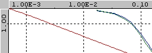

The Graph window displays measured data on an x, y grid. It also displays the Harvey or Polynomial fitted curve.
Right-click in the graph window to access options on the context menu.
| Colored Graph Lines | Description | |
|  |
Blue Green Red |
Measured forward scatter. Measured backward scatter. Modified version of the Harvey or Polynomial fitted curve. |
The optical basis for the graph display is illustrated below.